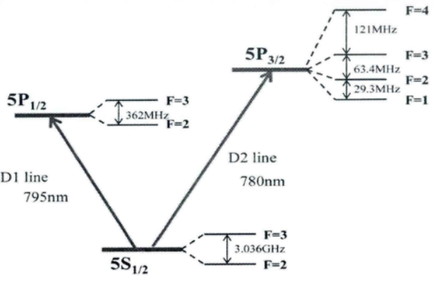
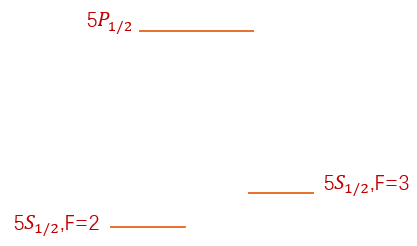
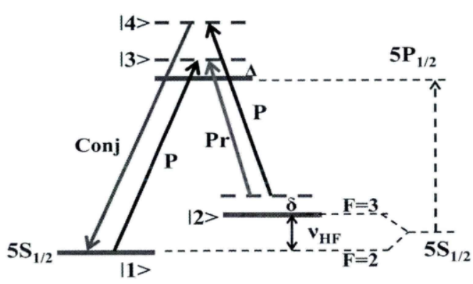
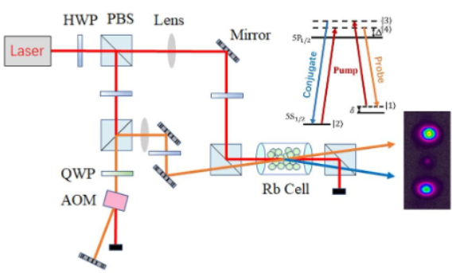

四波混频
四波混频
简介
四波混频过程是光与物质相互作用的非线性过程，是个三阶非线性过程，四个光波可以通过介质进行能量和动量的转移。
通常情况下，为两束不同频率的光在非线性介质中（例如光纤，非线性晶体，原子系综等）发生反应，并生成两束新的频率光束的效应。在这个过程中要满足能量守恒和相位匹配，像这样由四束不同频率的光参与的反应就被称为四波混频反应。
对于特殊的情况，存在一种简并形式的四波混频，当两束入射的pumb光是同一频率且共线传播时，在反应中一共存在三束频率的光。我们在体系中我们所使用的就是这种特殊情况。
而在原子蒸汽中，强的非线性效应发生在光的频率接近原子能级共振区范围（近共振）。
原子体系中的四波混频
体系能级图
Rb原子在该体系中的跃迁主要包含两个超精细能级结构的跃迁，即从基态跃迁到两个激发态和，这两个能级跃迁分别叫做铷原子的D1线和D2线如图1所示，由于波长在795nm的D1线的激发态的超精细结构更简单些，以及在这个结构下原子基态的相干性也更容易建立，所以实验上优先考虑采用D1线来实现四波混频过程。

同时对于铷原子基态的超精细能级分裂结构，分别为（将其设置为态），（将其设置为态）。由此我们建立了一个”“能级跃迁，如图2所示。

建立四波混频过程
在该体系中实现四波混频的能级示意图如图所示，强Pump光激发处于基态的原子到虚能级激发态（设为态），原子从态跃迁至态产生probe，也称为斯托克斯光（stokes）；同时,Pump光将原子从基态激发至虚能级激发态（设为态）上，这同样是一个非共振的跃迁过程，最后原子从态跃迁至态，这个过程将产生一束新的光叫做共轭光（conjugate），也称为反斯托克斯光（anti-stokes）。若我们同时注入一束弱的probe，此时将通过一个受激四波混频过程将probe强度放大。
因此，两个Pump光子转换成了一个probe光子和一个conjugate光子，形成一个四波混频过程。

该过程会产生压缩特性的原因：由于probe和conjugate是在同一个激发周期产生的，他们具有稳定的时间关联性，即他们的量子噪声表现出时间关联特性。因此，如果我们将两束光的噪声相减，必将得到低于标准量子极限的噪声起伏。为此probe和conjugate具有强度噪声关联，其强度差噪声具有压缩特性。
四波混频的基本理论模型
首先假设光场在原子气体中来自外界环境的损耗可以忽略不计，此时可以将四波混频过程理论上模拟为一个仅有相关光场之间的能量转移过程。设probe，conjugate，pump的湮灭算符分别为,和，相互作用强度用实数来表示，则这个过程中的哈密顿量可以表示为：
由于Pump的功率相比其他两束光的功率高很多，我们可以认为在四波混频中Pump的功率变化极其微小，因此我们可以假设Pump的初态和末态均处于相干态。由于，因此我们在哈密顿量中做个替换，则哈密顿量有如下形式：
同时，。再令，则有：
与这个哈密顿量对应的时间演化算符为：
若四波混频过程发生的时间为，则可以用以下变换来描述混频过程：
其中表示”压缩参数“，是对压缩度大小进行量化的物理量。上式中的算符又称为”双模压缩算符“，它对和同时进行了压缩运算。
压缩变换具有可加性，即：
演化过程
根据上述讨论，我们可以列出probe湮灭算符的海森堡运动方程：
同理conjugate光的湮灭算符运动方程为：
对以上方程进行二阶求导，解出两个算符的数学表达式：
如果该过程四波混频发生的时间长度为，表达式如下：
也可用密度矩阵转换来描述：
其中为输入态probe光子的湮灭算符，为输出态probe光子的湮灭算符；为输入态conjugate光子的湮灭算符，为输出态conjugate光子的湮灭算符。
在这种简并pump光模式下，四波混频满足的角频率和波矢量条件为：
这两个等式分别代表着该四波混频过程的能量守恒和相位匹配。
强度压缩
有关上节演化过程中，令，其中这个的G代表了四波混频过程中probe光的强度增益。此时有：
由于在初始时，conjugate光没有seed光注入（即真空注入），因此起初是真空态的湮灭算符，而且平均光子数为0：；而对于probe而言，初始时有seed光注入，起初的probe是明亮的，其平均光子数远大于1：。
此时我们考虑输出的probe平均光子数态，则有：
同理输出的conjugate平均光子数态为：
从上式对比我们可以看出，probe与conjugate得输出强度并不相等，它们的强度差不为0。虽然在四波混频过程中，受激拉曼过程产生的stokes光的光强和anti-stokes光是同步的过程（即，每产生一个stokes光子，伴随着产生一个anti-stokes光子），可以推断由四波混频过程本身所带来的probe光的光强与conjugate光的光强是相等的，但是由于probe光存在seed光的注入，seed光进入原子介质后，除了强度被放大外，seed光本身也会穿过原子气体，因此从原子介质中出来的probe光强等于透过的seed光的光强与放大后的probe光的光强之和。而conjugate光由于是真空注入的，四波混频后conjugate光的光强要比probe光强更小。由此的值不为0，我们便可以在频谱上测到不为零的强度差噪声信号。接下来我们对probe与conjugate的强度差噪声起伏做理论分析。
输出光场的光子数态方差可以用表示，当我们考虑输出的probe和conjugate光的强度差后，其表达式为：
化简得：
可以看到我们输出的probe和conjugate光的强度差，以及强度差的噪声起伏是固定的，其相对于压缩算符并不敏感，也即，在四波混频压缩前后，强度差的噪声起伏并未发生改变。
然而，四波混频过程是一个非线性参量放大的过程，probe光与conjugate光的光强在四波混频之后都被放大了，虽然两束光之间的相对强度噪声不变，但是与其对应的散粒噪声基准却增大了，这就导致了强度差压缩的产生。
所谓的散粒噪声基准（也即散粒噪声极限（SNL）），是指求和后的相干光的强度噪声，也即光子数态的总和，有：
我们假定输入光场的噪声处于散粒噪声极限水平，则在输出光场我们可以测出低于散粒噪声基准的强度差信号，我们定义系统的强度差压缩（intensity difference squeezing，IDS）定义为系统内产生的两个光场的强度差方差与同强度相干光的方差之比，即：
可以看到，IDS被认为是probe光增益G的函数，增益越大，IDS越小，压缩度越高。
我们也可用噪声系数（noise figure，NF）来刻画该强度差压缩在噪声功率dB空间的值：
由于对于所有的压缩参量s，四波混频的增益都大于1，所以其产生的两个光束的相对噪声起伏一定会低于散粒噪声基准，表现出强度差压缩特性。光与原子的非线性作用越强，则四波混频过程越剧烈，产生的关联光子对也越多，最终表现为噪声因子越小，得到强度差压缩更大的压缩信号。
四波混频的实验过程
在实验上，双型四波混频装置如下图所示，激光器运作频率在377.11020THz（795.754nm）附近，出光后用一个半玻片和PBS的组合将光分成强度不同的两束，其中的强光作为Pump通过格兰棱镜直接打入铷原子池中，弱光（大约200mw）将打进声光调制器AOM中（调制3.04GHz），生成相对Pump红失谐3.04GHz的探针光，这里相当于距离铷原子基态能级有4MHz的双光子失谐。随后两束光以大约7mrad的夹角在水平方向上汇聚于铷原子池中央（满足相位匹配条件）。

加热到116℃左右的铷原子池具有很高的原子密度，从而导致了强烈的非线性反应，此时四波混频的作用很明显，probe的强度将被放大，在满足最佳相位匹配条件的位置生成新的conjugate光。此时Pump的功率为200mw，注入的探针光30μw。
由于Pump的偏振正交于probe和conjugate，为了过滤掉反应后出来的pump，需要在铷原子池后加另外一个格兰棱镜。这样，两束用于实验测量的probe和conjugate均已被制备完成。
参考文献
[1]刘寸金. 原子系综中四波混频过程产生强度差压缩光源的实验及其应用研究[D].华东师范大学,2013.
[2]任原. 原子系综四波混频过程产生纠缠光场的研究[D].华东师范大学,2023.DOI:10.27149/d.cnki.ghdsu.2022.004812.